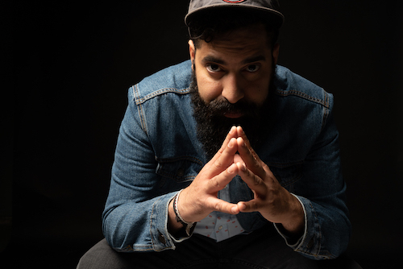
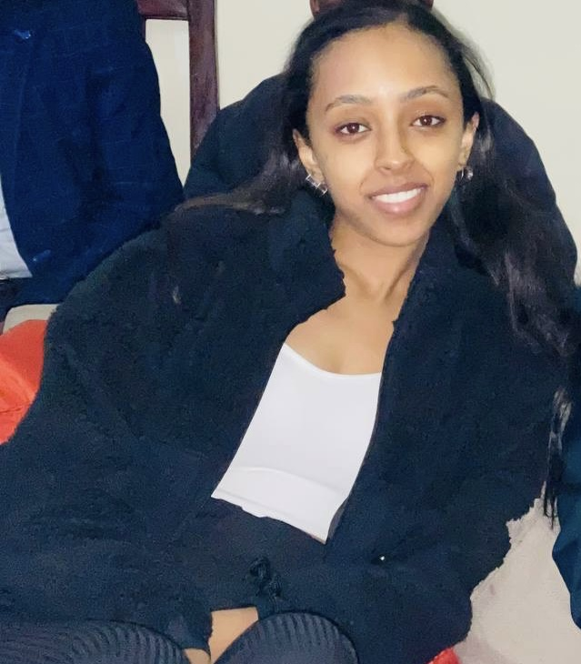
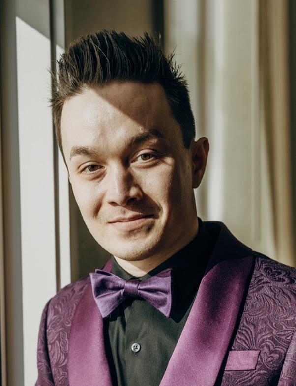

Daniel Castro
Hello, my name is Danny. I recently was managing a warehouse for over 5 years and decided I needed a change. For most of my life I've been involved in music, be it writing, producing , and/or performing. Needless to say I have a strong creative side and wanted to express myself in a different medium. Software development allows just that. My friend was a drummer in my band and took on coding and suggested I looked into it and so I did. The creative process is a lot like writing music in software development. I work well with teams and love to motivate people and bring them together in achieving one goal. I believe my management skills along with my creative side I will be able to be an asset in a team environment. Taking classes in codeFellows and creating a page that I'm actually proud of has giving me the drive I need to continue exploring this path.
Hugo Thompson
Hi, I'm Hugo Thompson. Back in Highschool in 2017 I discovered a repository on github that anyone could contribute to for a game, and the idea of myself, a nobody, being able to add changes to this game that everyone could enjoy, really interested me. I've been contributing to open contribution repositories since, and it has become my current plan to become a Software Developer. I only dabbled in frontend before joining the bootcamp, but I was introduced to js and ts by having to work with it in a few repositories. And what do you know, I loved it! Ideally I want to become a contractor for frontend work, though I'd be happy with more permanent placement as well. I'm quite used to working with teams by now and I deeply enjoy helping
Marta Deneke
My name is Marta Deneke, I am originally from Ethiopia. I received my bachelor's in MIS in 2020. But because the pandemic had just started right before my graduation I had a difficult time finding a job, which is when I started to look into becoming a software engineer and started researching boot camps, and joined Code Fellows. During my time at Western Washington University, I worked and volunteered at various companies in order to find my true passion. I have faced different challenges to be where I am today and once I land my dream job and become a Software Engineer I would like to start a nonprofit in Ethiopia for young women that are interested in tech but don’t know where to start. This will be a challenging journey but I know it will be worth it.
Harvey Francois
I was working at a warehouse before I started at Code Fellows. I wanted a career in coding and have always had an interest in AI, machine learning, and robotics. This is why I am really interested in learning python. I had my first experience with coding in college when I enrolled in a robotics class and loved it. I am here at Code fellows because of that.